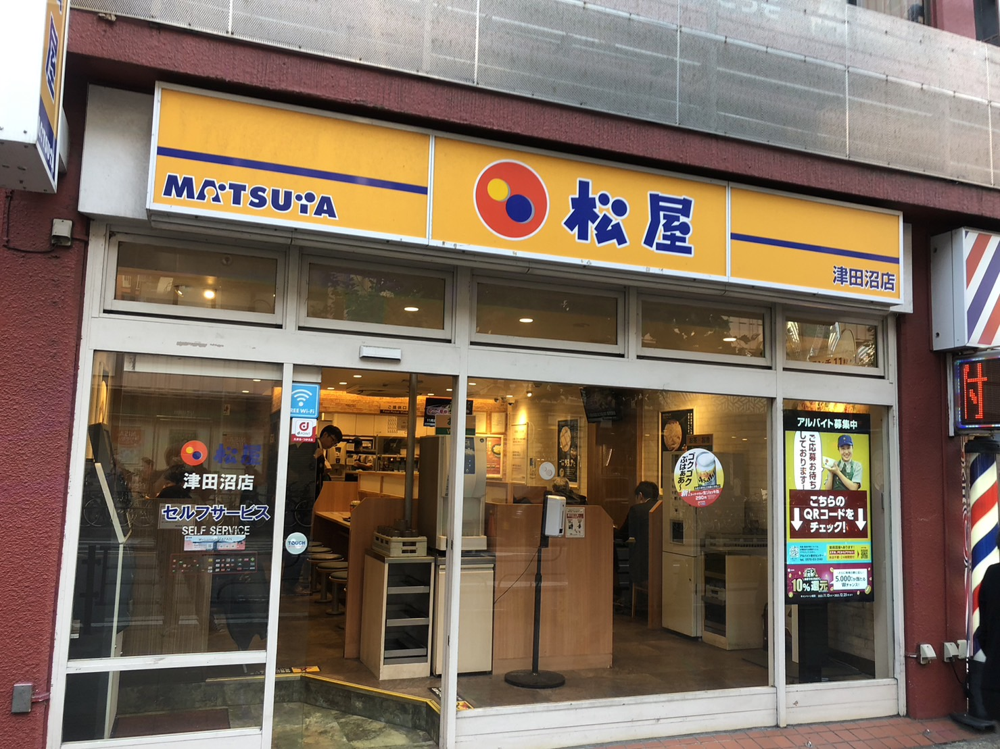
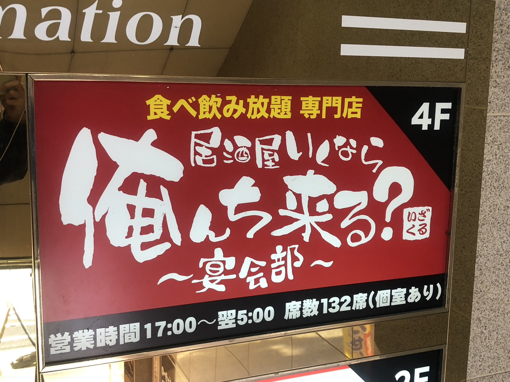
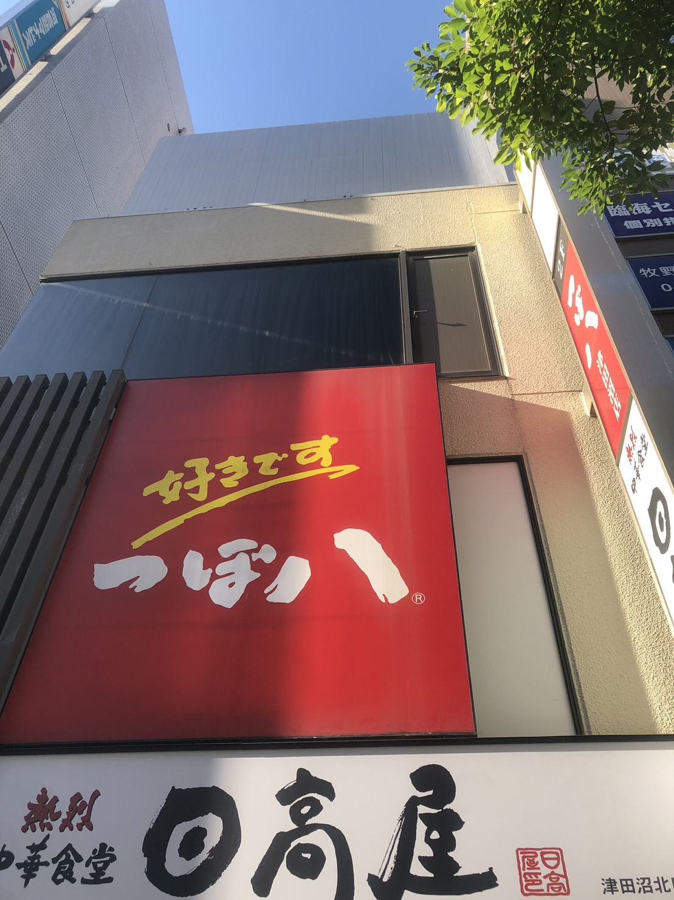

| 特徴 | 松屋は24時間営業で提供も早く、値段も安いためお金があまり無い人、生活リズムが夜型の生活リズムの人も時間を気にせずに行けるためとてもおすすめです。 松屋では定番メニューの牛めしがとてもおすすめです。値段も特盛で740円と1000円以下でお腹がいっぱいになる事ができます。 |
| 住所 | 〒275-0016 千葉県習志野市津田沼１丁目１０−４１ 津田沼十番街ビル 1F |
| 電話番号 | 080-5928-0792 |
| 営業時間 | 24時間営業 |

| 特徴 | ここの特徴は営業時間が朝までな事と食べ飲み放題3時間が3000円の事です。 朝までお店がやってる事により終電を気にせずに飲む事ができます。 また、気軽に話しかけてくれる店員たちも魅力的！ |
| 住所 | 〒274-0825 千葉県船橋市前原西２丁目１３−１３ アロー津田沼駅前ビル 4階 |
| 電話番号 | 047-409-7114 |
| 営業時間 | 日～土・祝日 17:00-5:00 ＊(ラストオーダー閉店30分前) |

| 特徴 | ここの特徴は24時間営業な事です。 24時間で営業している居酒屋はつぼ八しか無いため時間を気にせずに飲むことができます。 また料理も新鮮な魚を提供しており、味もおすすめできます。 |
| 住所 | 〒274-0825 千葉県船橋市前原西２丁目１３−１５ 津田沼ニイクラビル ２F |
| 電話番号 | 047-400-5845 |
| 営業時間 | 24時間営業 |